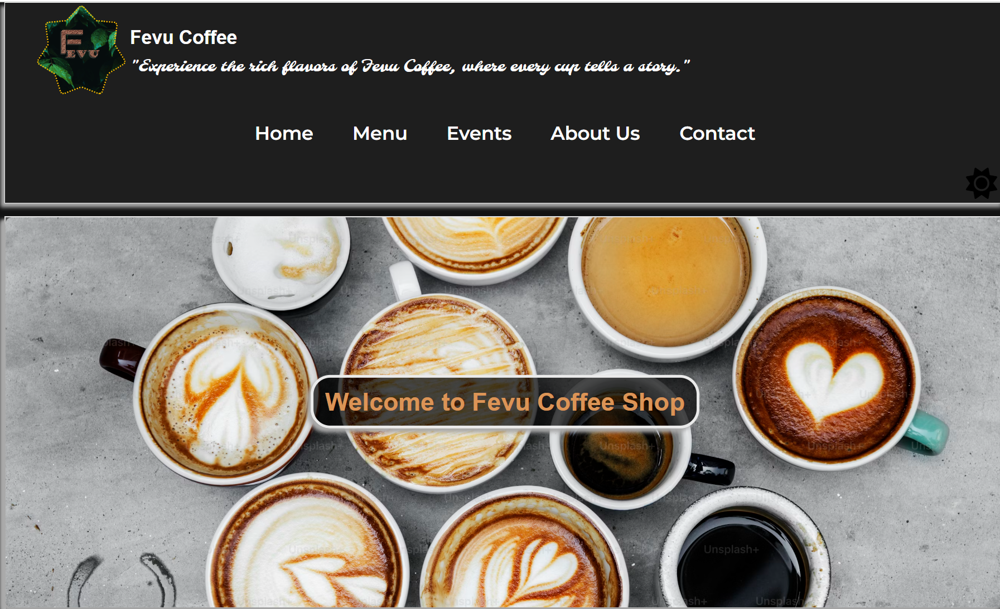
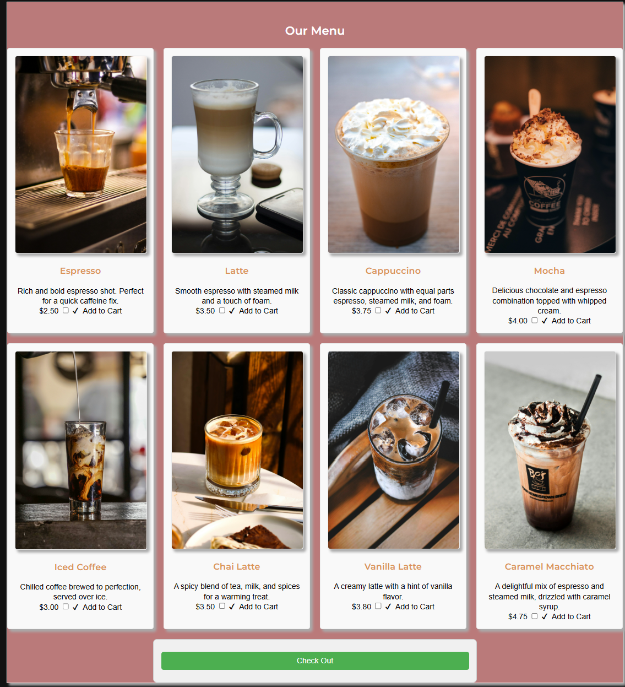
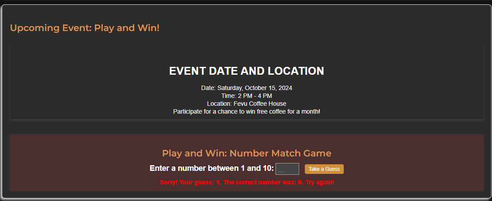
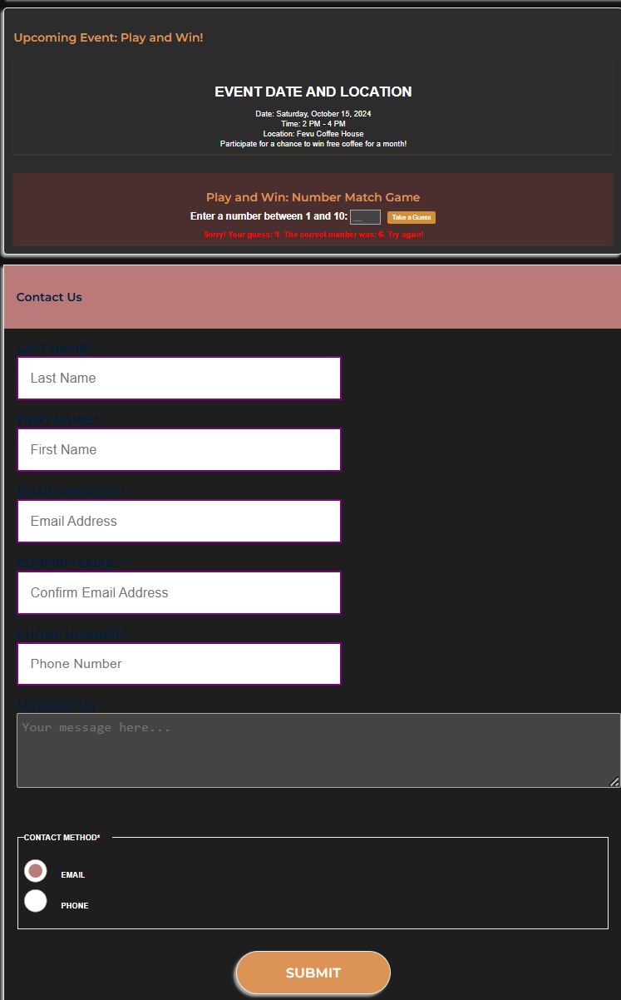

Fevu Coffee Website
Bringing a local cafe's warmth online
Overview
Fevu Coffee is a neighborhood café known for its cozy atmosphere and community events. I designed and developed a digital presence to help them showcase their personality, promote upcoming events, and enable online ordering.
Tools & Technologies
- HTML5
- CSS3 (Flexbox & Grid)
- JavaScript (basic interactivity)
- Responsive Design (Mobile-First)
Website Screens




Key Features
- Event Calendar for promoting local happenings
- Responsive layout across devices
- Simple and clean menu layout
- Contact form with email submission
Challenges & What I Learned
One challenge was balancing visual design with usability on small screens. I also learned a lot about using CSS Grid for flexible layouts and how to communicate effectively with a non-technical client.